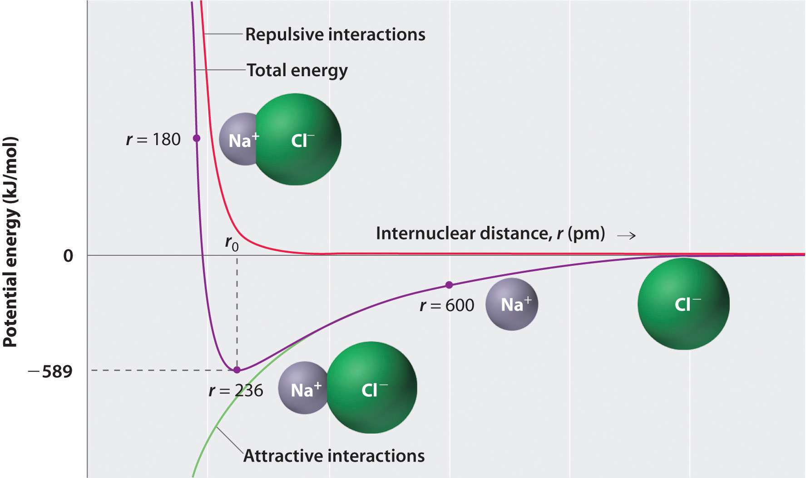

Chapter 2 "Molecules, Ions, and Chemical Formulas" explained that ionic bonds are formed when positively and negatively charged ions are held together by electrostatic forces. You learned that the energy of the electrostatic attraction (E), a measure of the force’s strength, is inversely proportional to the internuclear distance between the charged particles (r):
Equation 8.1
where each ion’s charge is represented by the symbol Q. The proportionality constant k is equal to 2.31 × 10−28 J·m.This value of k includes the charge of a single electron (1.6022 × 10−19 C) for each ion. The equation can also be written using the charge of each ion, expressed in coulombs (C), incorporated in the constant. In this case, the proportionality constant, k, equals 8.999 × 109 J·m/C2. In the example given, Q1 = +1(1.6022 × 10−19 C) and Q2 = −1(1.6022 × 10−19 C). If Q1 and Q2 have opposite signs (as in NaCl, for example, where Q1 is +1 for Na+ and Q2 is −1 for Cl−), then E is negative, which means that energy is released when oppositely charged ions are brought together from an infinite distance to form an isolated ion pair. As shown by the green curve in the lower half of Figure 8.1 "A Plot of Potential Energy versus Internuclear Distance for the Interaction between a Gaseous Na", Equation 8.1 predicts that the maximum energy is released when the ions are infinitely close to each other, at r = 0. Because ions occupy space, however, they cannot be infinitely close together. At very short distances, repulsive electron–electron interactions between electrons on adjacent ions become stronger than the attractive interactions between ions with opposite charges, as shown by the red curve in the upper half of Figure 8.1 "A Plot of Potential Energy versus Internuclear Distance for the Interaction between a Gaseous Na". The total energy of the system is a balance between the attractive and repulsive interactions. The purple curve in Figure 8.1 "A Plot of Potential Energy versus Internuclear Distance for the Interaction between a Gaseous Na" shows that the total energy of the system reaches a minimum at r0, the point where the electrostatic repulsions and attractions are exactly balanced. This distance is the same as the experimentally measured bond distance.
Energy is released when a bond is formed.
Figure 8.1 A Plot of Potential Energy versus Internuclear Distance for the Interaction between a Gaseous Na+ Ion and a Gaseous Cl− Ion
The energy of the system reaches a minimum at a particular distance (r0) when the attractive and repulsive interactions are balanced.
Let’s consider the energy released when a gaseous Na+ ion and a gaseous Cl− ion are brought together from r = ∞ to r = r0. Given that the observed gas-phase internuclear distance is 236 pm, the energy change associated with the formation of an ion pair from an Na+(g) ion and a Cl−(g) ion is as follows:
Equation 8.2
The negative value indicates that energy is released. To calculate the energy change in the formation of a mole of NaCl pairs, we need to multiply the energy per ion pair by Avogadro’s number:
Equation 8.3
This is the energy released when 1 mol of gaseous ion pairs is formed, not when 1 mol of positive and negative ions condenses to form a crystalline lattice. Because of long-range interactions in the lattice structure, this energy does not correspond directly to the lattice energy of the crystalline solid. However, the large negative value indicates that bringing positive and negative ions together is energetically very favorable, whether an ion pair or a crystalline lattice is formed.
We summarize the important points about ionic bonding:
Calculate the amount of energy released when 1 mol of gaseous Li+F− ion pairs is formed from the separated ions. The observed internuclear distance in the gas phase is 156 pm.
Given: cation and anion, amount, and internuclear distance
Asked for: energy released from formation of gaseous ion pairs
Strategy:
Substitute the appropriate values into Equation 8.1 to obtain the energy released in the formation of a single ion pair and then multiply this value by Avogadro’s number to obtain the energy released per mole.
Solution:
Inserting the values for Li+F− into Equation 8.1 (where Q1 = +1, Q2 = −1, and r = 156 pm), we find that the energy associated with the formation of a single pair of Li+F− ions is
Then the energy released per mole of Li+F− ion pairs is
Because Li+ and F− are smaller than Na+ and Cl− (see Figure 7.9 "Ionic Radii (in Picometers) of the Most Common Oxidation States of the "), the internuclear distance in LiF is shorter than in NaCl. Consequently, in accordance with Equation 8.1, much more energy is released when 1 mol of gaseous Li+F− ion pairs is formed (−891 kJ/mol) than when 1 mol of gaseous Na+Cl− ion pairs is formed (−589 kJ/mol).
Exercise
Calculate the amount of energy released when 1 mol of gaseous MgO ion pairs is formed from the separated ions. The internuclear distance in the gas phase is 175 pm.
Answer: −3180 kJ/mol = −3.18 × 103 kJ/mol
The strength of the electrostatic attraction between ions with opposite charges is directly proportional to the magnitude of the charges on the ions and inversely proportional to the internuclear distance. The total energy of the system is a balance between the repulsive interactions between electrons on adjacent ions and the attractive interactions between ions with opposite charges.
Describe the differences in behavior between NaOH and CH3OH in aqueous solution. Which solution would be a better conductor of electricity? Explain your reasoning.
What is the relationship between the strength of the electrostatic attraction between oppositely charged ions and the distance between the ions? How does the strength of the electrostatic interactions change as the size of the ions increases?
Which will result in the release of more energy: the interaction of a gaseous sodium ion with a gaseous oxide ion or the interaction of a gaseous sodium ion with a gaseous bromide ion? Why?
Which will result in the release of more energy: the interaction of a gaseous chloride ion with a gaseous sodium ion or a gaseous potassium ion? Explain your answer.
What are the predominant interactions when oppositely charged ions are
Several factors contribute to the stability of ionic compounds. Describe one type of interaction that destabilizes ionic compounds. Describe the interactions that stabilize ionic compounds.
What is the relationship between the electrostatic attractive energy between charged particles and the distance between the particles?
The interaction of a sodium ion and an oxide ion. The electrostatic attraction energy between ions of opposite charge is directly proportional to the charge on each ion (Q1 and Q2 in Equation 8.1). Thus, more energy is released as the charge on the ions increases (assuming the internuclear distance does not increase substantially). A sodium ion has a +1 charge; an oxide ion, a −2 charge; and a bromide ion, a −1 charge. For the interaction of a sodium ion with an oxide ion, Q1 = +1 and Q2 = −2, whereas for the interaction of a sodium ion with a bromide ion, Q1 = +1 and Q2 = −1. The larger value of Q1 × Q2 for the sodium ion–oxide ion interaction means it will release more energy.
How does the energy of the electrostatic interaction between ions with charges +1 and −1 compare to the interaction between ions with charges +3 and −1 if the distance between the ions is the same in both cases? How does this compare with the magnitude of the interaction between ions with +3 and −3 charges?
How many grams of gaseous MgCl2 are needed to give the same electrostatic attractive energy as 0.5 mol of gaseous LiCl? The ionic radii are Li+ = 76 pm, Mg+2 = 72 pm, and Cl− = 181 pm.
Sketch a diagram showing the relationship between potential energy and internuclear distance (from r = ∞ to r = 0) for the interaction of a bromide ion and a potassium ion to form gaseous KBr. Explain why the energy of the system increases as the distance between the ions decreases from r = r0 to r = 0.
Calculate the magnitude of the electrostatic attractive energy (E, in kilojoules) for 85.0 g of gaseous SrS ion pairs. The observed internuclear distance in the gas phase is 244.05 pm.
What is the electrostatic attractive energy (E, in kilojoules) for 130 g of gaseous HgI2? The internuclear distance is 255.3 pm.
According to Equation 8.1, in the first case Q1Q2 = (+1)(−1) = −1; in the second case, Q1Q2 = (+3)(−1) = −3. Thus, E will be three times larger for the +3/−1 ions. For +3/−3 ions, Q1Q2 = (+3)(−3) = −9, so E will be nine times larger than for the +1/−1 ions.

At r < r0, the energy of the system increases due to electron–electron repulsions between the overlapping electron distributions on adjacent ions. At very short internuclear distances, electrostatic repulsions between adjacent nuclei also become important.